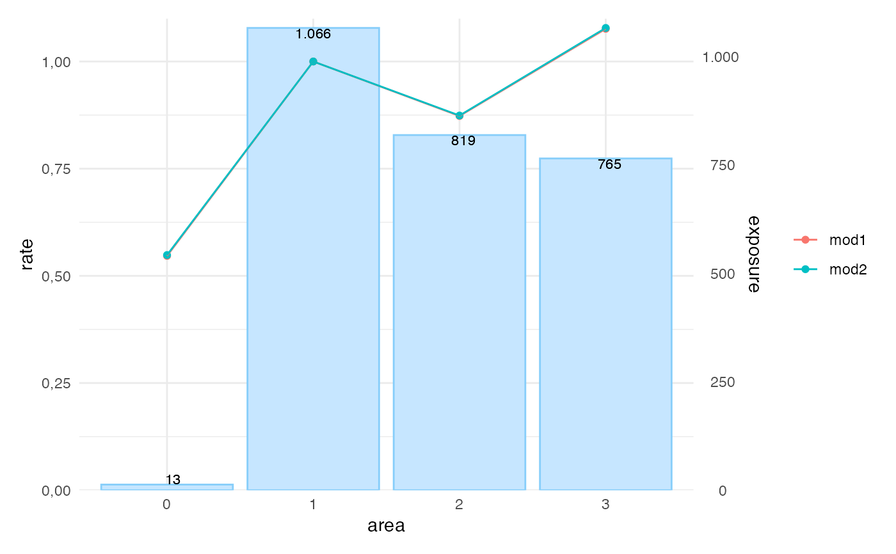

R/rating_factors.R
autoplot.riskfactor.RdTakes an object produced by univariate(), and plots the available input.
# S3 method for riskfactor autoplot( object, risk_factors = NULL, ncol = 1, labels = TRUE, dec.mark = ",", ylab = "rate", color_bg = "#E7B800", linetype = FALSE, ... )
| object | riskfactor object produced by |
|---|---|
| risk_factors | character vector to define which factors are included. Defaults to all risk factors. |
| ncol | number of columns in output (default is 1) |
| labels | show labels with the exposure (default is TRUE) |
| dec.mark | control the format of the decimal point, as well as the mark between intervals before the decimal point, choose either "," (default) or "." |
| ylab | modify label for the y-axis |
| color_bg | change the color of the histogram ("#E7B800" is default) |
| linetype | use different linetypes (default is FALSE) |
| ... | other plotting parameters to affect the plot |
a ggplot2 object
library(dplyr)#> #>#> #> #>#> #> #>df <- MTPL2 %>% mutate_at(vars(area), as.factor) %>% mutate_at(vars(area), ~biggest_reference(., exposure)) mod1 <- glm(nclaims ~ area + premium, offset = log(exposure), family = poisson(), data = df) mod2 <- glm(nclaims ~ area, offset = log(exposure), family = poisson(), data = df) x <- rating_factors(mod1, mod2, model_data = df, exposure = exposure) autoplot(x)